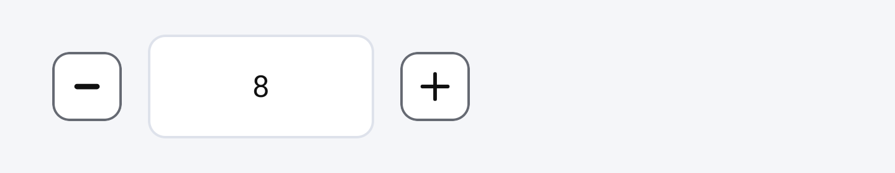
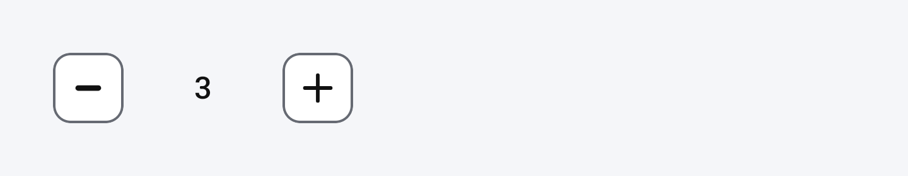
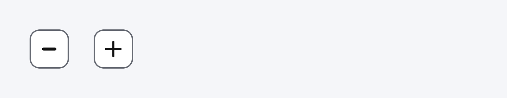
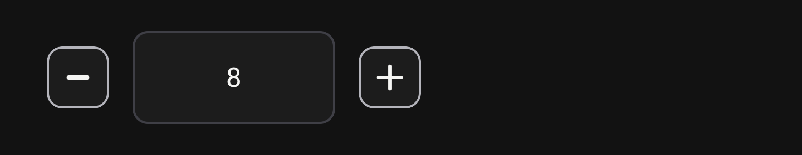
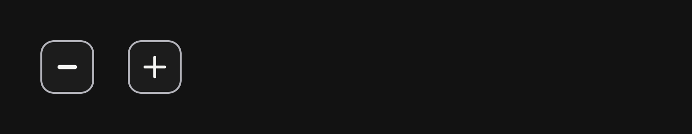

StudioStepper
감소와 증가 사이에 값이나 다른 조작기를 배치합니다.
- 컴포넌트 ID
studio-stepper- 분류
- 입력
- 구현
StudioStepper·MyWidget/app/src/main/java/com/mywidget/editor/core/designsystem/component/StudioInputsAndAdjusters.kt:239- 주요 API
- label, onDecrease, onIncrease, valueText/onValueTextChange, center, 개별 활성 상태와 접근성 문구
- 지원 상태
- 증감 가능
- 한계
- 편집
- 비활성
- 변형
- 값 숨김
- 읽기 전용 값
- 직접 입력
- 중앙 조작기
- 크기
- 기본 터치 48dp
- 시각 버튼 32dp
- 기호 20dp
- 테마·토큰
- EditorSliderDefaults
- surface
- outlineVariant
- 접근성·사용 규칙
- 감소·증가를 값 이름과 함께 읽습니다. 경계 활성 여부와 입력 검증은 호출부가 제공합니다.
- 공통 사용 여부
- 모서리·타이포그래피·정밀 배치·수동 목표·목록 줄 수에서 사용
- 설계 품질
- 수치 노출 여부와 값 소유권을 명확히 구분함
- 판단
- 유지
- 판단 근거
- 치수 비노출 정책과 숫자 직접 입력 요구를 같은 조립 구조로 지원합니다.
- 구현·문서
- 현재 소스 위치와 심볼 확인
- 렌더링
- 네이티브 캡처 있음
코드 예시
StudioStepper(
label = label,
onDecrease = { onValueChange((requireNotNull(parsedValue) - 1).toString()) },
onIncrease = { onValueChange((parsedValue?.plus(1) ?: minimum).toString()) },
modifier = Modifier.testTag("${testTag}_stepper"),
valueText = value,
onValueTextChange = { input ->
if (input.isEmpty() || input.toIntOrNull() != null) onValueChange(input)
},
valueModifier = Modifier.testTag(testTag),
decreaseEnabled = canDecrease,
increaseEnabled = canIncrease,
decreaseModifier = Modifier.testTag("${testTag}_decrease"),
increaseModifier = Modifier.testTag("${testTag}_increase"),
)Android 네이티브 예시
아래 캡처에 표시된 상태와 기기 조건을 확인했습니다.

411 × 891 dp · 560 dpi · 글꼴 1배 · API 35 · ko-KR
캡처 기준 HEAD
ff118cc8d · 소스 지문 73da2a0be891 · 2026-11-13T10:23:11.274577Z
411 × 891 dp · 560 dpi · 글꼴 1배 · API 35 · ko-KR
캡처 기준 HEAD
ff118cc8d · 소스 지문 73da2a0be891 · 2026-11-13T10:23:11.274577Z
411 × 891 dp · 560 dpi · 글꼴 1배 · API 35 · ko-KR
캡처 기준 HEAD
ff118cc8d · 소스 지문 73da2a0be891 · 2026-11-13T10:23:11.274577Z
411 × 891 dp · 560 dpi · 글꼴 1배 · API 35 · ko-KR
캡처 기준 HEAD
ff118cc8d · 소스 지문 73da2a0be891 · 2026-11-13T10:23:11.274577Z411 × 891 dp · 560 dpi · 글꼴 1배 · API 35 · ko-KR
캡처 기준 HEAD
ff118cc8d · 소스 지문 73da2a0be891 · 2026-11-13T10:23:11.274577Z
411 × 891 dp · 560 dpi · 글꼴 1배 · API 35 · ko-KR
캡처 기준 HEAD
ff118cc8d · 소스 지문 73da2a0be891 · 2026-11-13T10:23:11.274577Z